Module 07: Auto Scaling
Agenda & Learning Objectives
- Auto Scaling Concept & Architecture
- Scaling Group
- Launch Templates
- Scaling Rules
- Scaling Activity
- Lifecycle Hooks & Event Notifications
- Pricing Model
Pain Point: Handling Changes in Demand
How can we scale services automatically to match demand?
Video streaming
(unpredictable traffic)
Gaming
(regular peak hours every day)
Benefits of Auto Scaling
On demand
Adjust resources to fit the demand curve in real time. You do not have to worry about your compute capacity when demand surges occur.
Automated
Automatically create and release ECS instances based on policies you specify. Configure SLB and RDS whitelists with no manual operation.
Benefits of Auto Scaling (cont.)
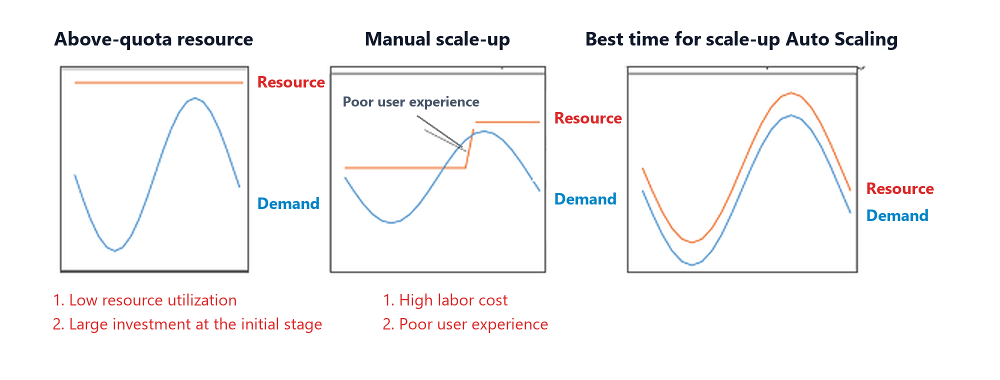
Elastic Scaling Service (ESS)
Elastic Scaling Service (ESS) is a fully managed cloud service that automatically adjusts elastic compute capacity to match fluctuating business demands and management policies.
Compared to traditional physical servers requiring expensive over-provisioning for peak traffic, Auto Scaling dynamically launches, configures, and releases compute resources in real time. It seamlessly synchronizes with Server Load Balancer (SLB) instances and ApsaraDB RDS access whitelists, eliminating manual operational bottlenecks while maximizing cost efficiency.
⚡ Elastic Scale-Out
Automatically provisions compute resources during traffic surges to maintain consistent application SLAs.
📉 Elastic Scale-In
Automatically releases or stops idle instances during off-peak periods, preventing cloud budget waste.
🛡️ Elastic Self-Healing
Continuously inspects instance health and automatically replaces failed or unhealthy instances without human intervention.
🧠 Intelligent Triggers
Combines CloudMonitor metrics, scheduled timers, target tracking, and AI-driven predictive scaling algorithms.
🔄 Zero-Touch Ecosystem
Automatically registers instances with SLB backend groups and manages private IP whitelists on RDS databases.
Elastic Scale-Out
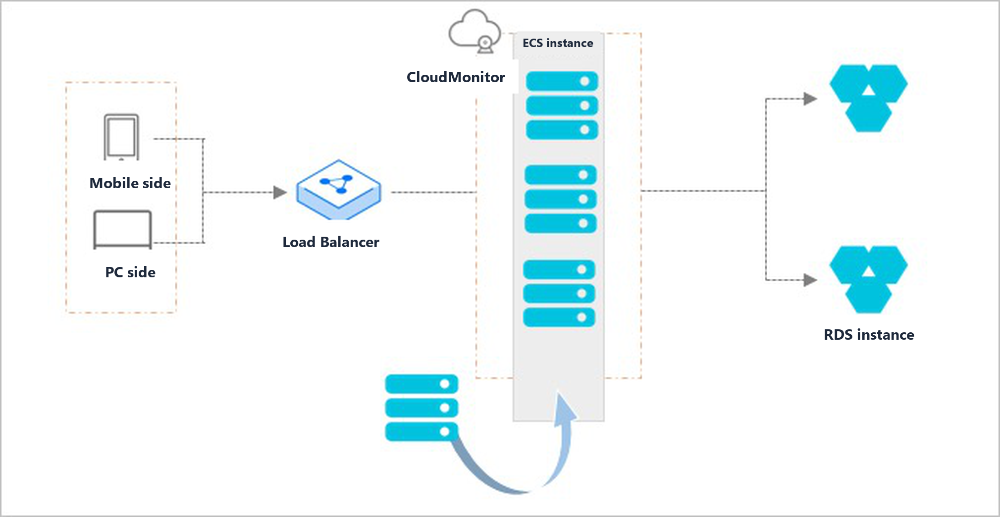
1. Surge Trigger
CloudMonitor alarms, timers, or tracking rules trigger scale-out.
2. Provisioning
Provisions new ECS instances across multi-zone vSwitches.
3. SLB Registration
Attaches new instances to SLB backend server groups.
4. RDS Whitelisting
Adds instance private IPs to ApsaraDB RDS security whitelists.
Elastic Scale-In
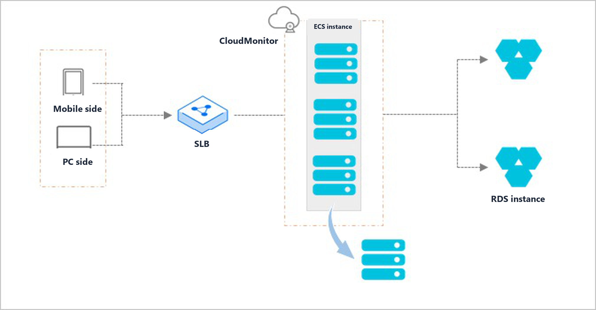
1. Low Demand
CloudMonitor alarms detect low load or off-peak schedule ends.
2. Deregister SLB
Deregisters instances from SLB and drains in-flight requests.
3. Prune RDS
Removes private IP addresses from RDS security whitelists.
4. Reclaim Instance
Instances are released or stopped based on reclaim policy.
Elastic Self-Healing
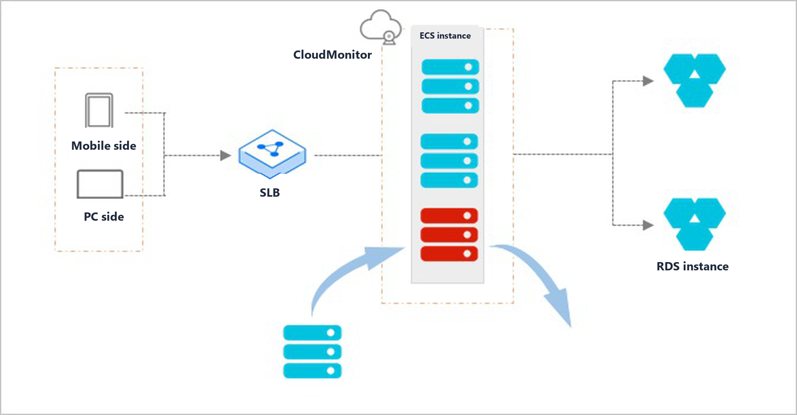
1. Health Check
Continuously inspects ECS operating state and SLB health.
2. Flag Unhealthy
Identifies VM crashes, hardware faults, or health probe failures.
3. Detach & Release
Detaches from SLB, removes RDS whitelist, and terminates VM.
4. Restore Capacity
Provisions healthy replacement VM from active configuration.
Auto Scaling Architecture Ecosystem
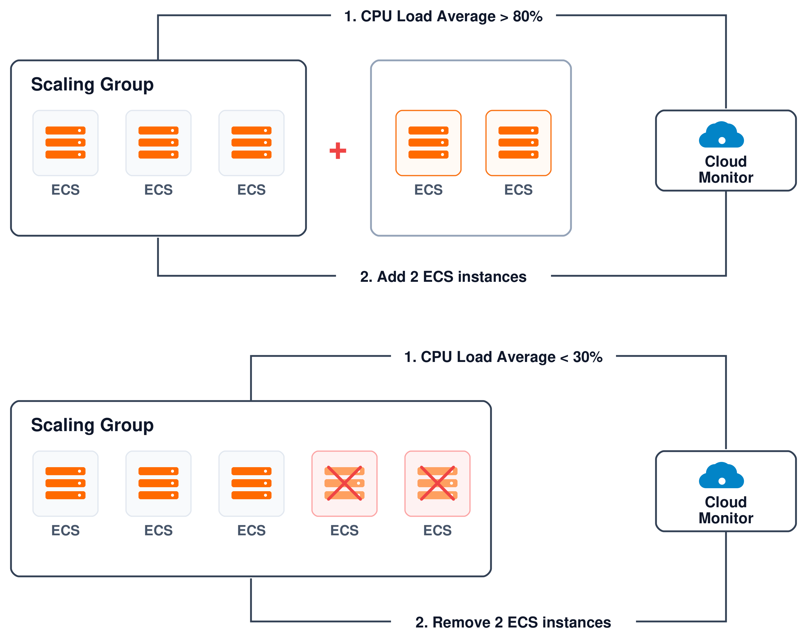
1. Telemetry & Triggers
CloudMonitor alarms, cron schedules, target tracking, and OpenAPI.
2. Policy & Scaling Engine
Evaluates scaling rules, cooldown windows, bounds, and lifecycle hooks.
3. Target Cloud Resources
Multi-AZ ECS/ECI, SLB/ALB backend pools, and RDS security whitelists.
Scaling Group
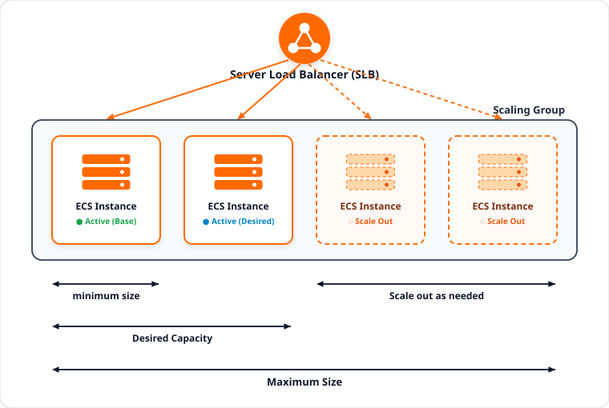
A Scaling Group is a logical management container of ECS instances bound to SLB and VPC infrastructure:
- Minimum Size (MinSize): The capacity floor. Guarantees healthy instances never drop below this value.
- Desired Capacity: The baseline target automatically maintained during normal traffic.
- Scale-Out as Needed: Dynamic compute buffer added automatically during load surges.
- Maximum Size (MaxSize): The capacity ceiling. Guarantees instance count never exceeds this cost limit.
- Zero-Touch Binding: Automatically registers ECS backends with SLB and updates RDS whitelists.
Multi-Zone vSwitch Architecture
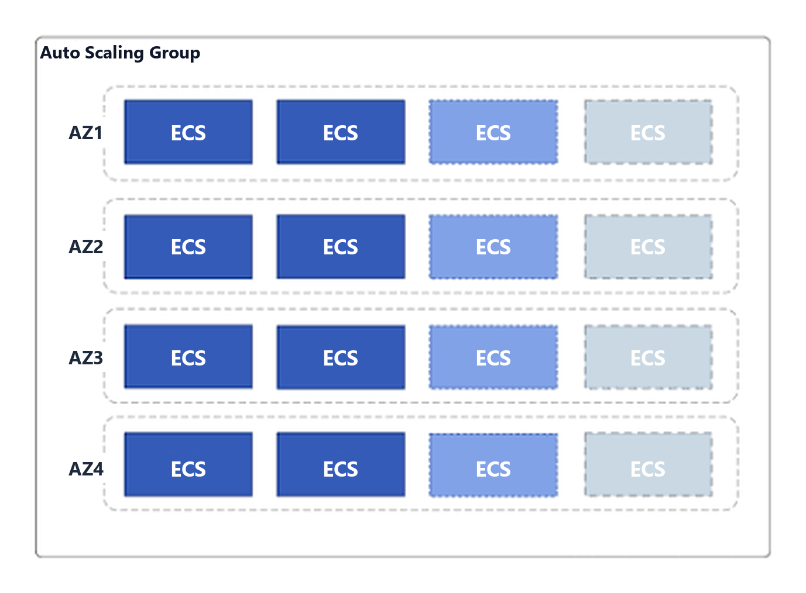
Scaling groups span multiple vSwitches across Availability Zones (AZs) to eliminate single points of failure:
- Priority Strategy: Provisions in primary Zone A first. If inventory or IP addresses exhaust, automatically fails over to Zone B.
- Balanced Strategy (HA): Distributes ECS instances evenly across all configured zones to maximize disaster recovery tolerance.
- Cost-Optimized Strategy: Prioritizes zones and instance families that offer lowest compute costs or deepest spot discounts.
- Production Standard: Always bind at least 2 or 3 vSwitches across distinct Availability Zones.
Creation & Immutable Attributes
Mandatory Creation Parameters
When provisioning a new Scaling Group, administrators define:
- Scaling Group Name: Unique identifier within the region.
- MinSize & MaxSize: Baseline floor and ceiling capacity limits.
- Default Cooldown Time: Lockout duration in seconds (default: 300s).
- Removal Policy: Rule governing which instances are evicted during scale-in.
- Network Configuration: Target VPC and multi-zone vSwitches.
- Load Balancer & Database: Associated SLB instances and RDS databases.
Mutable vs. Immutable Attributes
Understanding architectural boundaries after group creation:
- Strict Immutable Attributes:
- Region: Cannot be moved across regions once created.
- Network Type: VPC network type cannot be switched to Classic.
- Primary VPC ID: Cannot be rebound to a different VPC.
- Dynamically Mutable Attributes:
- MinSize, MaxSize, and Desired Capacity.
- Default Cooldown period and Removal Policies.
- Associated SLB instances and RDS database instances.
- Associated vSwitches within the same VPC.
Scaling Group States
1. Active State
The operational state of a Scaling Group:
- Requires at least one Active Launch Template.
- Accepts and executes scaling rules, scheduled tasks, and alarm tasks.
- Maintains total instance count between MinSize and MaxSize.
- Performs periodic self-healing health check replacements.
2. Inactive State
The paused management state:
- Reject all automated scaling rule executions and trigger tasks.
- Existing ECS instances remain running and serving traffic.
- Allows administrative modifications to configurations and rules.
- Can be re-enabled once an active Launch Template is ready.
3. Deleting State
The termination teardown state:
- Triggered via console or DeleteScalingGroup API.
- Rejects all incoming scaling requests and activity triggers.
- Terminates all automatically launched ECS instances.
- Removes associated configurations, rules, and activity logs.
State Transition Constraint: A Scaling Group can only transition to Inactive when no Scaling Activity is currently in progress. Administrative updates (modifying Min/Max size, attaching SLB) can be performed in either Active or Inactive state.
Instance Removal Policies
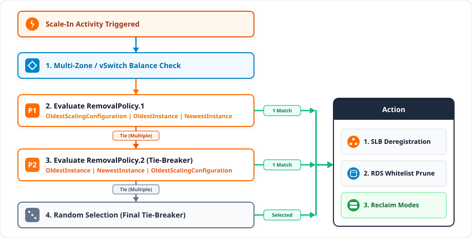
Zone Balancing First
Auto Scaling always evicts from the zone or vSwitch with the greatest number of instances to preserve HA.
RemovalPolicy.1 & .2
Evaluates OldestScalingConfiguration, OldestInstance, or NewestInstance in sequence.
Graceful Deregistration
Deregisters selected VM from SLB with connection draining and removes private IP from RDS whitelists.
Reclaim Modes
Release Mode (Default)
Permanently terminates and deletes ECS instances. Compute and storage charges stop immediately.
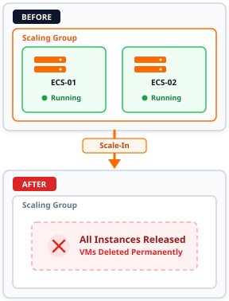
Shutdown & Reclaim Mode
Stops instances without deletion (No-Fee When Stopped), enabling instantaneous warm restart.
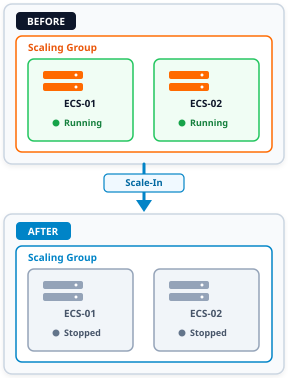
Manual Preservation
Manually attached instances are detached from SLB/group but remain running independently.
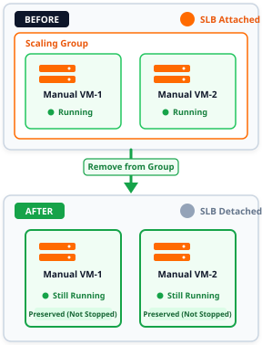
What Happens If a Scaling Group Is Deleted
ForceDelete Execution
Deleting a Scaling Group via the console or OpenAPI:
- Teardown Initiation: Group enters
Deletingstate and halts all incoming scaling requests. - Traffic Deregistration: Automatically detaches all instances from associated SLB backends and removes IPs from RDS whitelists.
- Instance Termination: In
ForceDeletemode, Auto Scaling automatically terminates all automatically launched ECS instances. - Manual Instance Detachment: Manually added instances are safely detached and remain untouched in the user account.
Resource Deletion Scope
Understanding which assets are removed vs. preserved:
- Permanently Deleted:
- The Scaling Group container itself.
- All internal Launch Templates and Scaling Rules.
- All Scaling Activities and execution history logs.
- Preserved & Untouched:
- Associated Server Load Balancer (SLB) instances.
- Associated ApsaraDB RDS database instances.
- Independent Scheduled Tasks and CloudMonitor alarms.
- Virtual Private Cloud (VPC) and vSwitches.
Launch Template
An ECS Launch Template is a reusable blueprint that stores the instance launch parameters, so every instance created by Auto Scaling starts with the same specification:
- Compute & Image: Instance type and operating system image (public, custom, or Marketplace).
- Storage: System disk category and size, plus optional data disks.
- Network & Security: Security Group, vSwitch, and public IP or EIP settings.
- Access & Boot: SSH key pair, instance RAM role, tags, and User Data script.
Why use a Launch Template:
- Reusable: One template can serve multiple Scaling Groups and manual ECS creation.
- Centralized Governance: Update image, instance type, or security settings in one place.
- Consistent Instances: Every scale-out launches instances from the same tested blueprint.
- Independent Resource: It is managed in ECS, separate from the lifecycle of any Scaling Group.
Launch Template Versions
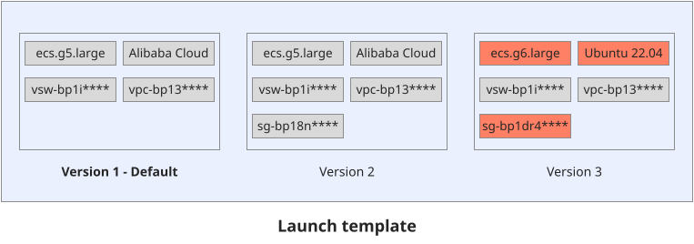
Version 1 (Default)
Defines the baseline blueprint (ecs.g5.large, Alibaba Cloud Linux, VPC, and vSwitch) designated as the Default Version.
Version 2 (Incremental Add)
Inherits Version 1 parameters and adds Security Group sg-bp18n**** without altering existing versions.
Version 3 (Spec Upgrade)
Upgrades instance type to ecs.g6.large, OS image to Ubuntu 22.04, and Security Group to sg-bp1dr4****.
Launch Template in Scaling Group
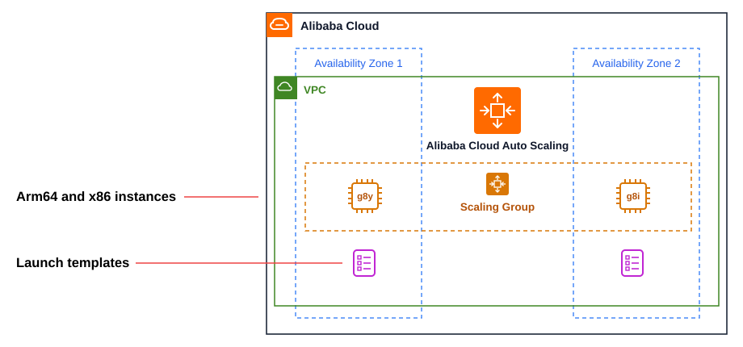
Arm64 & x86 Instance Pools
Combine Arm64 (ecs.g8y YiTian) and x86 (ecs.g8i) instance types across zones to maximize capacity and price-performance.
Flexible Version Binding
Bind the Scaling Group to a Specific, Default, or Latest Launch Template version for controlled rollouts.
Multi-Zone Provisioning
Auto Scaling deploys instances across Availability Zone 1 and Availability Zone 2 within the VPC using the template blueprint.
Launch Template vs Scaling Configuration
| Aspect | Launch Template | Scaling Configuration |
|---|---|---|
| Scope | Independent ECS resource, reusable across Scaling Groups and manual ECS creation. | Belongs to one Scaling Group only. |
| Versioning | Multiple versions with a default version; roll back by selecting an earlier version. | No versions. Attributes cannot be edited, so a new configuration must be created. |
| Activation | Scaling Group binds to a specific, default, or latest version. | Only one configuration is Active at a time, up to 10 stored per group. |
| Reuse | One template shared by many groups. | Must be recreated for each Scaling Group. |
| Best For | Multiple groups, frequent updates, and centralized governance. | Simple, single-group setups. |
Scaling Rules
A Scaling Rule defines the specific quantitative action executed when a scaling event is triggered:
- Action Types:
- Add N Instances: Increases capacity by a fixed count (e.g.,
Add 2 instances). - Remove N Instances: Decreases capacity by a fixed count (e.g.,
Remove 1 instance). - Adjust to N Instances: Sets absolute total capacity to a specific number (e.g.,
Adjust to 10 instances). - Percentage Scaling: Adjusts capacity by a percentage of current total (e.g.,
Add 25%).
- Add N Instances: Increases capacity by a fixed count (e.g.,
- Rule Types: Simple Rule, Step Rule, Target Tracking Rule, and Predictive Rule.
- Cooldown Parameter: Optional rule-specific cooldown time that overrides the group's default cooldown.
Rule Execution Behavior:
- Direct Execution: Manually triggering a scaling rule executes immediately without waiting for cooldown expiration.
- Alarm Association: Rules are linked to CloudMonitor alert tasks or scheduled tasks to automate execution.
- Activity Generation: Every successful rule execution generates a tracked Scaling Activity recording instance IDs, timings, and outcomes.
Simple & Step Rule
Simple Rule
Supported by both ECS-type and ECI-type scaling groups; executes a single fixed operation when triggered manually, by a scheduled task, or by an event-triggered task:
- Operation:
- Adjust to N instances: Sets instance count to N (up to 1,000 per activity).
- Add N / Remove N instances: Increases or decreases instance count by N.
- Add N% / Remove N%: Adjusts instance count by N% (requires specifying Minimum Number of Instances to Adjust).
- Cooldown Time: Optional rule-level cooldown (in seconds). If unspecified, the scaling group's default cooldown applies.
Step Rule
Supported only by ECS-type scaling groups; performs tiered adjustments based on metric breach size:
- Monitoring Type & Run At: Bound to a System Monitoring or Custom Monitoring event-triggered task (e.g.,
Average CPU utilization ≥ 80% for 3 consecutive periods). - Step Adjustments (Operation): Defines tiered actions by breach size (supports
Adjust to N,Add/Remove N, andAdd/Remove N%):80% ≤ CPU < 90%: Add 2 instances.90% ≤ CPU < +∞: Add 3 instances.
- Instance Warmup Time: Excludes newly added instances from CloudMonitor metrics and dynamic calculations during warmup (in seconds).
Target Tracking & Predictive Rule
Target Tracking Rule
Supported by both ECS-type and ECI-type scaling groups; automatically creates and manages scale-out and scale-in event-triggered tasks:
- Metric Type:
- ECS Group: Average CPU utilization, Average inbound/outbound internal or public network traffic, or ALB QPS per Backend Server.
- ECI Group: CPU Utilization, Memory, or ALB QPS per Backend Server.
- Target Value & Warmup: Dynamically adjusts capacity to keep the metric at or near the target value, observing Instance Warmup Time.
- Alert Thresholds & Scale-In Control: Configures consecutive breach counts for scale-out/scale-in alerts and supports Disable Scale-in.
Predictive Rule
Supported only by ECS-type scaling groups (max 1 predictive rule per group); forecasts future capacity from historical data:
- Metric & Target Value: Reuses an existing Target Tracking rule or monitors ECS Average CPU utilization or inbound/outbound internal network traffic.
- Predictive Mode: Start with Forecast Only to validate predictions, then switch to Forecast and Scale to create prediction tasks.
- Max Capacity Handling: When predictions exceed Preset Max Capacity, choose to overwrite max capacity, cap at preset max, or add an Increase Ratio buffer (0–100%).
- Pre-launch Time: Starts prediction tasks 0–60 minutes ahead of the hour for resource preparation.
Strict Boundary Clamping
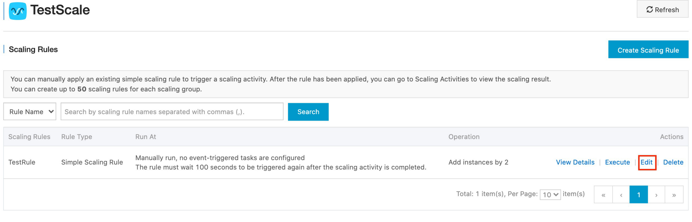
MaxSize Ceiling Clamping
Scaling rules can never breach the group's upper boundary:
- Scenario: Scaling Group MaxSize = 3, Total Capacity = 2. A rule triggers to "Add 3 instances".
- Outcome: Auto Scaling clamps the request and adds only 1 instance, bringing total capacity exactly to MaxSize (3).
MinSize Floor Clamping
Scaling rules can never breach the group's lower boundary:
- Scenario: Scaling Group MinSize = 2, Total Capacity = 3. A rule triggers to "Remove 5 instances".
- Outcome: Auto Scaling clamps the request and removes only 1 instance, preserving the MinSize baseline (2).
Manual Scaling
Direct Rule Execution
Manual administrative triggers via console or API:
- Can be executed whenever the group is in
Activestate and no activity is currently running. - Cooldown Bypass: Direct manual execution bypasses the cool-down time and executes immediately.
- Respects Min/Max boundaries: If added instances would exceed MaxSize, the operation is clamped to MaxSize.
Attaching & Detaching Running Instances
Integrating pre-existing ECS instances:
- Adding Existing Instances: Existing instances in the same VPC/region can be attached to the group. The operation fails immediately if adding them exceeds MaxSize.
- Configuration Independence: Manually attached instances are NOT tied to the active Launch Template.
- Detaching Instances: Detached instances are removed from SLB/RDS, but are NEVER stopped or deleted.
Automatic Scaling: Alarm Tasks
Telemetry Alarm Architecture
Dynamic scaling triggered by real-time infrastructure metrics:
- Monitors telemetry streams collected by the CloudMonitor agent on each ECS instance.
- Statistical Functions: Evaluates Average, Maximum, or Minimum across all instances in the Scaling Group.
- Evaluation Periods: Configures continuous evaluation periods (e.g. 3 consecutive checks of 1 minute) to filter out transient metric spikes.
- Comparison Operators: Triggers linked Scaling Rules when metric ≥ or ≤ threshold.
CloudMonitor Metric
Key metrics used in enterprise scaling alarms:
- CpuUtilization: Processor load (scale-out at ≥ 75%, scale-in at ≤ 25%).
- MemoryUtilization: Memory saturation for caching tiers.
- IntranetIn / IntranetOut: Internal bandwidth flows across application tiers.
- TcpConnection: Active socket counts on web application servers.
- SystemDiskReadBps / WriteBps: Storage I/O throughput bottlenecks.
Automatic Scaling: Scheduled Tasks
Scheduled Task Architecture
Predictable traffic scheduling for planned events:
- Create up to 20 scheduled tasks per scaling group.
- Triggers a specific Scaling Rule at a designated launch time (e.g. 13:00 every weekday).
- Supports flexible recurrence patterns: Daily, Weekly, Monthly, or standard Cron expressions.
- Cooldown Bypass: Scheduled tasks can execute immediately without waiting for cool-down expiration.
Launch Expiration Window
Preventing task abandonment during busy activities:
- Launch Expiration Time: Configurable retry window (default: 600s, up to 86,400s).
- If a scheduled task triggers while the group is busy executing another activity, the task retries automatically within the expiration window.
- Once the active activity completes and the group becomes idle, the scheduled task executes immediately.
- If the window expires before execution, the task is safely abandoned.
Automatic Scaling: Scheduled Task Concurrency
Concurrency Execution Rules
Strict order resolution when multiple scheduled tasks conflict:
- Single Activity Invariant: A Scaling Group can execute only ONE Scaling Activity at a time. Simultaneous activities are strictly prohibited.
- Earliest Task Priority: If multiple tasks trigger at overlapping times, the earliest scheduled task triggers its activity first. Remaining tasks retry within their Launch Expiration Times.
- Simultaneous Conflict Resolution: If multiple tasks are scheduled at the exact same second, Auto Scaling executes the latest created task and abandons earlier conflicting tasks.
Conflict Flow Resolution
- Task 1 Triggers (10:00:00): Scaling Activity 1 starts adding 5 instances (takes 180s).
- Task 2 Triggers (10:01:00): Blocked because Activity 1 is active; enters Launch Expiration retry loop.
- Activity 1 Completes (10:03:00): Task 2 successfully executes its rule within its expiration window.
Cool-Down Period
The Cool-Down Mechanics
Preventing flapping and over-provisioning cycles:
- Lockout Window: A configurable period (default: 300 seconds, 0–86,400s) during which the scaling group stabilizes.
- Start Timestamp: The cool-down timer begins immediately after the last ECS instance is successfully added or removed by a Scaling Activity.
- Purpose: Allows newly launched instances to complete OS boot-up, start application services, warm up memory caches, and absorb traffic before metrics are re-evaluated.
The Asymmetric Lockout Rule
Crucial distinction between trigger types during cooldown:
- REJECTED During Cooldown: Scaling activities requested by CloudMonitor alarm tasks are strictly rejected to prevent runaway over-scaling.
- ALLOWED During Cooldown: Manually executed scaling rules and Scheduled Tasks bypass cooldown and execute immediately.
- Architectural Value: Ensures operational emergency overrides can always execute while preventing autonomous telemetry feedback loops.
Atomicity & Rollback Integrity
Atomicity & Non-Interruptible Invariant
Scaling Activity execution characteristics:
- Single Activity Execution: Only one scaling activity can execute in a Scaling Group at any point in time.
- Non-Interruptible: Once initiated, an activity cannot be paused, stopped, or forcibly aborted. For example, if adding 20 instances, it cannot be terminated halfway after creating 5.
Instance-Level Rollback Integrity
How Auto Scaling handles partial operational failures:
- System Rollback Target: When an activity fails to complete (e.g. 20 instances created, but 1 fails to attach to SLB), the system maintains instance integrity, NOT activity integrity.
- Targeted Release: The system releases only the failed instance; successfully configured instances remain active in the group.
- Billing Implication: Because Auto Scaling provisions instances via the ECS API, rolled-back instances incur standard Pay-As-You-Go charges for the brief period they ran.
Graceful Shutdown
The In-Flight Data Loss Dilemma
Abruptly terminating web servers during scale-in causes sever customer-facing errors:
- Active HTTP sessions and long-polling connections are severed mid-transaction, generating HTTP 502/504 errors.
- Local application transaction logs stored on ephemeral system disks are destroyed before being archived to central storage.
- Asynchronous queue workers processing payment or report jobs are terminated without completing state checkpoints.
The 4-Step Graceful Evacuation Architecture
- SLB Connection Draining: Instance weight is set to 0. SLB stops routing new connections while allowing existing requests up to 300 seconds to complete cleanly.
- Trigger PENDING_REMOVE Hook: Auto Scaling suspends VM deletion and triggers a Cloud Assistant notification.
- Automated Log & Queue Flushing: Local shell scripts upload application logs to Object Storage Service (OSS) and finish pending jobs.
- Signal CompleteLifecycleAction: Cloud Assistant signals Auto Scaling to release the VM with zero customer impact.
Lifecycle Hooks
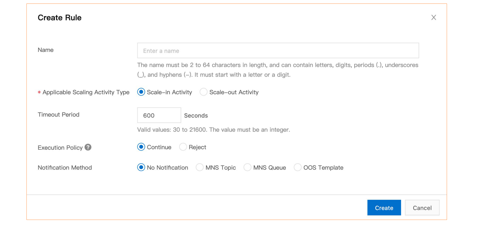
PENDING_ADD (Scale-Out Hook)
Suspends newly launched instances before traffic arrives:
- Instance is created, disks attached, and IP assigned.
- Hook suspends the instance in
PENDING:WAITstate before it is added to SLB backends or RDS whitelists. - Enables custom package installation, schema initialization, and cache pre-warming via Cloud Assistant.
PENDING_REMOVE (Scale-In Hook)
Suspends instances during scale-in before VM destruction:
- Instance is removed from SLB backends; traffic drains safely.
- Hook suspends the instance in
PENDING:WAITstate before deletion. - Allows uploading local log files to OSS, saving memory states, and finishing background queue tasks with zero loss.
Lifecycle Hook Pipeline
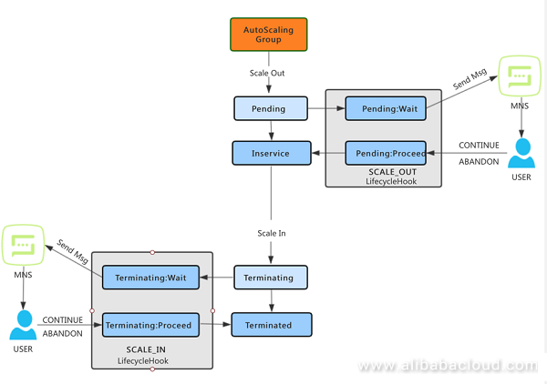
1. Timeout Window
Configurable timeout (30 to 21,600s, default 600s). If script finishes early, it sends CompleteLifecycleAction immediately.
2. Heartbeat Extension
Long operations can invoke RecordLifecycleAction to extend the timeout, resetting the countdown clock.
3. Hook Outcomes
CONTINUE proceeds to IN_SERVICE or termination. ABANDON aborts scale-out, releasing the instance cleanly.
Event Notifications
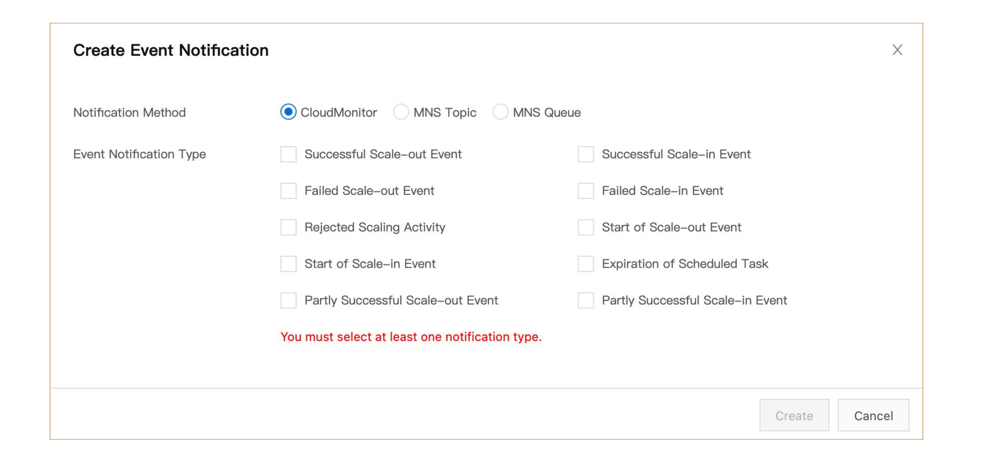
Notification Types
Real-time event streams emitted by Auto Scaling:
AUTOSCALING:SCALE_OUT_SUCCESS/FAILEDAUTOSCALING:SCALE_IN_SUCCESS/FAILEDAUTOSCALING:SCALE_REJECT(rejected during cooldown or max size)AUTOSCALING:LIFECYCLE_ACTION_TIMEOUT
Downstream Delivery Channels
Automating modern DevOps workflows:
- Message Service (MNS): Delivers JSON payloads to MNS topics and queues for asynchronous event-driven consumption.
- Function Compute (FC): Directly triggers serverless functions to perform automated infrastructure tasks upon scaling events.
- Webhooks & ChatOps: Dispatches real-time alerts to DingTalk, Slack, or enterprise PagerDuty webhooks.
Auto Scaling Pricing & Cost Optimization
100% Free Service Orchestration
Auto Scaling management capabilities are completely free of charge:
- Zero subscription fees for Scaling Groups, Configurations, Rules, or Activities.
- Zero fees for CloudMonitor integration or health check inspection.
- Billed Only for Underlying Compute: You pay exclusively for standard ECS instances, ECI container pods, cloud disks, and network bandwidth actually provisioned.
The 3-Tier Enterprise Cost Optimization Model
- Baseline Capacity (Savings Plans): Cover minimum predictable baseline instances with Savings Plans or Reserved Instances (up to 50–70% savings).
- Dynamic Daytime Surges (Pay-As-You-Go): Scale variable daytime demand using standard Pay-As-You-Go compute, paying per-second only when running.
- Fault-Tolerant Batch Bursts (Spot Instances): Use Spot instances for non-critical, queue-based, or container workloads (up to 80–90% savings).
Practice Scenario 1: E-Commerce Flash Sale Architecture
- AWait until the sale starts, then log in to the console and manually execute a scaling rule that adds 50 instances.
- BCreate only a CloudMonitor alarm task on CPU utilization, so new instances are added after the traffic surge has already started.
- CCreate a Scheduled Task that runs a scaling rule shortly before the midnight sale to add instances in advance, and a second scheduled task to remove them after the sale ends.
- DKeep a fixed number of instances and upgrade each instance to a larger specification when the sale starts.
Scenario 1: Solution & Architectural Analysis
Practice Scenario 2: Batch Processing with Spot Diversification
- ABuy Subscription ECS instances and keep them running 24/7.
- BUse Spot instances of one instance type in one zone only.
- CUse Spot instances with several instance types in the Launch Template, and let Auto Scaling switch to Pay-As-You-Go if Spot is unavailable.
- DUse only Pay-As-You-Go instances and turn them off by hand every morning.
Scenario 2: Solution & Architectural Analysis
Practice Scenario 3: Zero-Downtime State Evacuation with Hooks
- AConfigure a Lifecycle Hook for PENDING_REMOVE with a sufficient timeout, invoke Cloud Assistant to flush transactions and upload logs to OSS, and call CompleteLifecycleAction to proceed.
- BSet the Scaling Group Reclaim Mode to Release Mode and decrease the Default Cooldown period to 0 seconds so instances terminate immediately before logs can grow.
- CDisable Auto Scaling and manually log into each server via SSH to copy log files whenever scale-in is required.
- DConfigure CloudMonitor to send an SMS alert to system administrators whenever a scale-in activity begins so they can manually stop the application service.
Scenario 3: Solution & Architectural Analysis
Module 07: Auto Scaling
Module 08: Content Delivery Network (CDN)